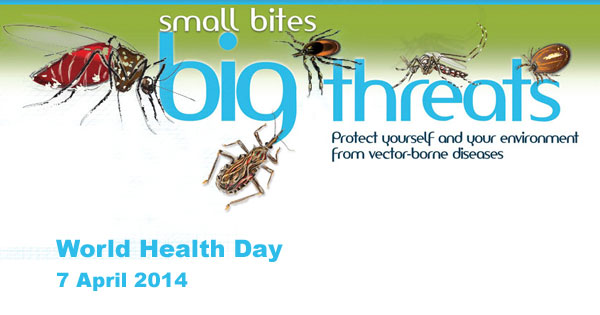

Malaria is returning to areas from which it had been eradicated, and spreading in to new areas, such as Central Asia, and Eastern Europe. More people are now dying of malaria than thirty years ago.
There are several factors which contribute to this:
Drug resistance is a problem, chloroquine is an extremely safe and cheap drug, but in Asia and an increasing area of Africa and South America the resistance levels are high. In some areas of Asia there is resistance to all the major drugs.
Mosquitos are developing resistance to the major classes of insecticide which have been used to control the disease.
Population and demographic changes have resulted in more people moving into densely populated areas, thereby increasing transmission.
Human environmental changes such as road building, mining, deforestation, and new agricultural and irrigation projects have created new breeding sites.
Migration, climatic change and the creation of new habitats have all resulted in people who have no natural immunity to the disease being exposed. This results in much higher rates of disease and death.
In many regions, malaria control programs have deteriorated or been abandoned.
Over the last decades control of malaria has been neglected and under-funded. Until the 1990s major agencies were wary at taking up the challenges posed by malaria because they are difficult. Many national health ministries need increased technical capacity and financial resources if they are to tackle infectious diseases effectively. Basic health services, which have been characterized by declining levels of funding, low staff morale and inadequate drug supplies, have been unable to address the challenges of effective diagnosis and prompt treatment. Pharmaceutical companies have spent relatively little on research.